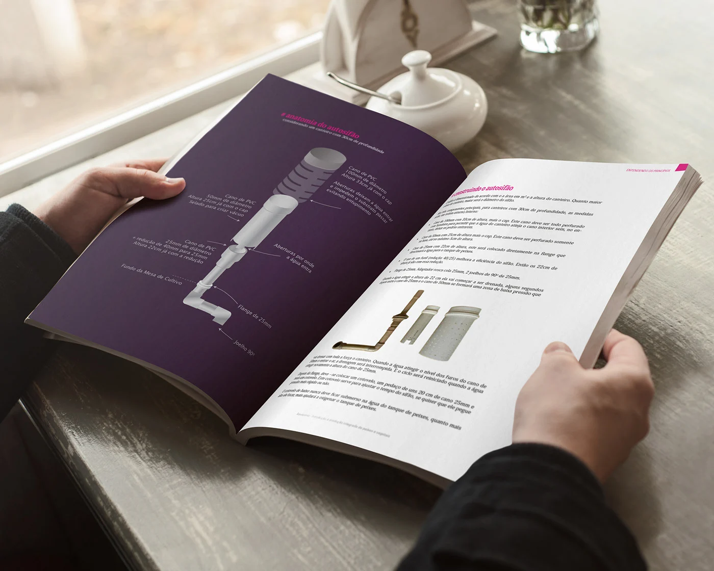
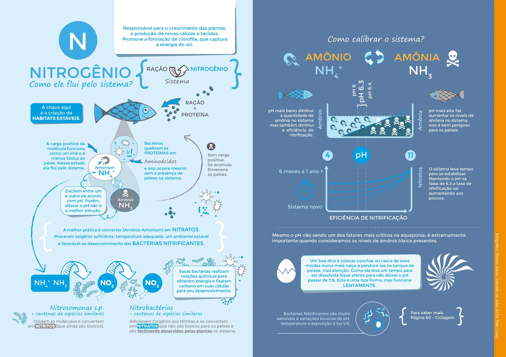
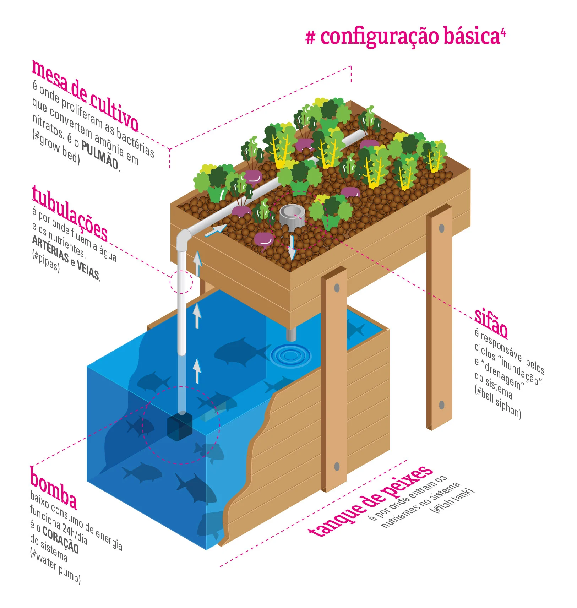
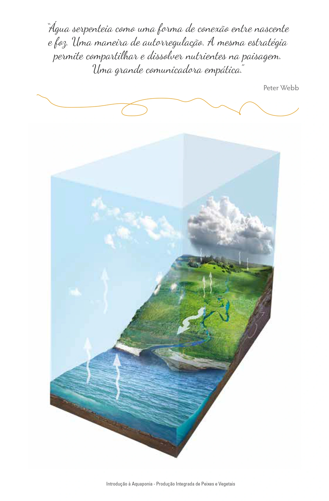
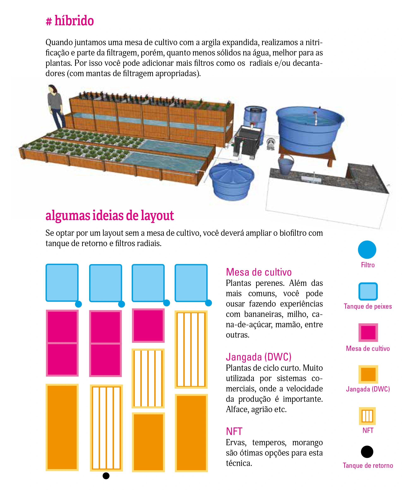
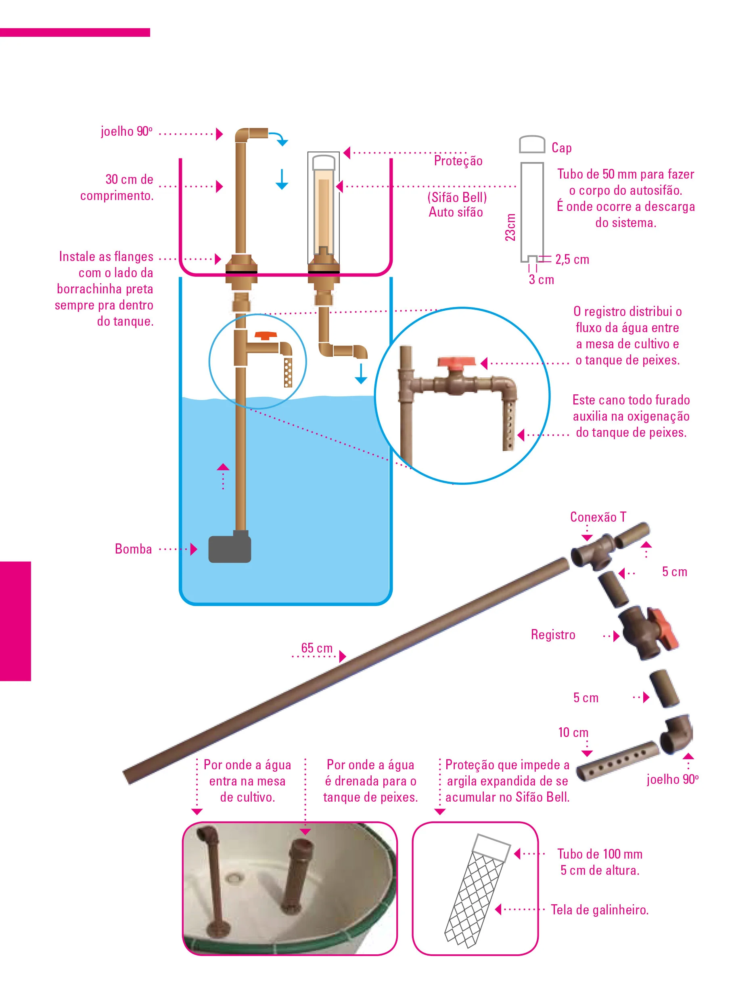

A beginner’s guide to growing fish and plants together.
Research, illustration, writing, layout and print, end to end.

Research, illustration, writing, layout and print, end to end.
I wanted to grow food at Waru, so I taught myself aquaponics and built a system by hand.
Nothing readable existed in Portuguese. With a professional, I wrote, illustrated and designed the book, and ran the crowdfunding that paid for it.






Co-authored with Claudio Alfaro (technical lead). Pedagogical section co-authored with Maga Miranda.